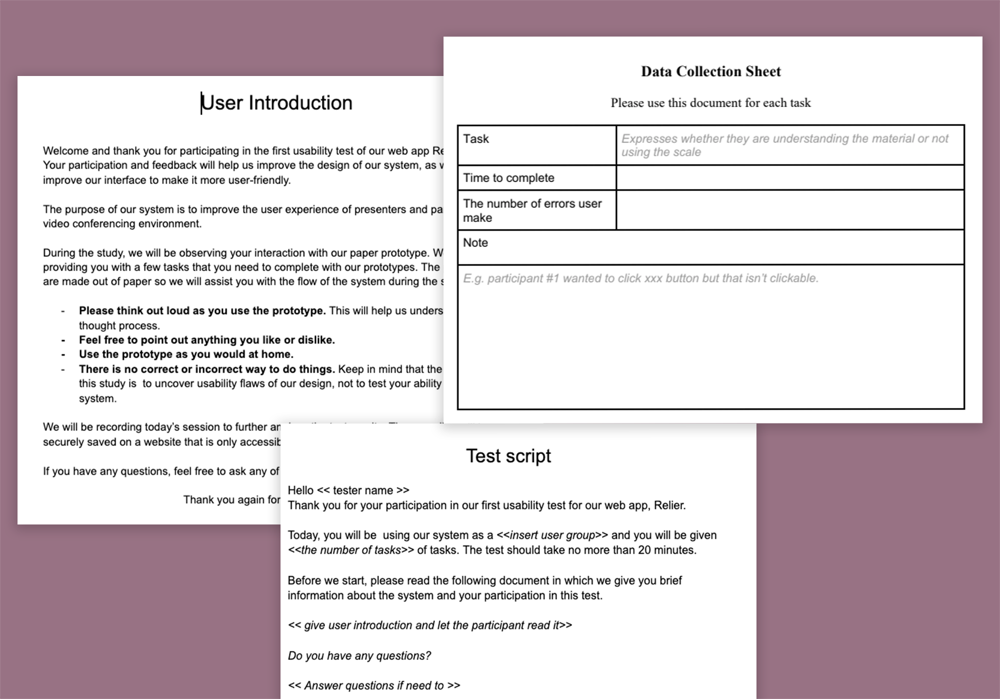

Evaluate the current issues
Target population
This usability testing target population is the younger
generation who are currently between 18-39 years old and own a
personal computer to enjoy gaming. According to the sales,
demographic and usage data of 2018 from the Entertainment
Software Association, the average gamer is 34 years old. Based
on the same source of data, the main device to play a game is a
personal computer (41%), followed by smartphone (36%) and
dedicated game console (36%). Based on the target user group, we
built two personas for this project.
IA & Competitive analysis
And then I conducted Competitive analysis on generalized
topologies, content and IA of competitors(Origin and Epic games)
along with Steam website.
As their main goal is to sell games, “Store” is placed on the
very first of the navigation menu on three websites. And as all
three companies have the standalone launcher, there is a
CTA(Click-To-Action) button to download a launcher. In addition,
to help users to find a game from tons of products, games are
categorized by various criteria, but three companies have a
filtering option by genre.
Cognitive Walkthrough and Heuristic Evaluation
Before we conducted usability testings with users, we had two
usability evaluation sessions: heuristic evaluation and cognitive
walkthrough. Each team member, including myself, conducted these two
testings individually and have findings aggregated.
For the heuristic evaluation, we evaluated the system based on
Jakob Nielsen's 10 heuristics
and used the tool "Heurio" which
helps us to make comments on the website that we evaluate. When
evaluating heuristics of the website, we used severity ratings and
added detailed desciptions to share findings with the team. This
allowed us to assess the various problems easily even if we have not
found them in our own evaluation session.
And for the cognitive walkthrough, we made a template on Google docs
and aggregated findings there. To conduct a cognitive walkthrough,
first, we defined 6 specific steps of purchasing a game and all 4
questions were answered in each step.
We found too many problems!
After completing the above steps, we found TOO MANY USABILITY
PROBLEMS! 😱 Steam's IA is awful (it has two navigation bars!), the
user experience is horrible (The only way to you continue shopping
is to go back to the home page and resume the whole process), and is
cluttered, chaotic and otherwise distracting interfaces! (Too many
visual contents pull users' working memory)
As purchasing a game and organizing game collections are the main
purpose of using a digital game distribution platform for users, we
decided to improve the user experience from visiting Steam website
to completing order.
Communicate, don't
Decorate
Plan UX research
Usability testing plan
Before we conduct usability testing, we develop the test plan
that includes scope, purpose, schedule, sessions, participants,
scenarios and metrics. Our testing plan is built on the template
from
usability.gov
The main scenario is to purchase a game, and the scenario
consists of 6 tasks. During the test, I will measure "successful
task completion", "Critical errors", "Time on task" and
"perceived ease of use" After users complete tasks that we ask,
they will be asked to have a 15-min semi-structured interview to
further understand their subjective feedback, likes, dislikes
and recommendations.

Prepare testing materials
To conduct a usability test as planned, we also prepared testing
materials. Test schedule, observer guidelines, test script, user
introduction, data collection sheet(observation), interview
question and background questionnaire are developed at this
phase.
Conduct testings!
..and there are more tasks to be done!
We are currently refining our test materials and plan and recruiting
participants for our study. We are going to complete all usability
testing in October, so please keep an eye on updates on our project!
🚧 This project is currently in progress 🚧